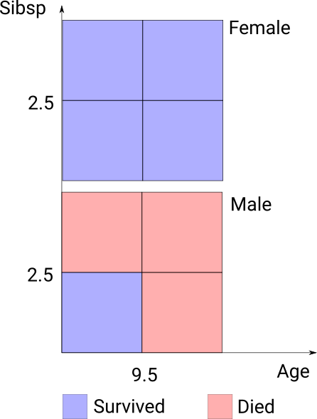
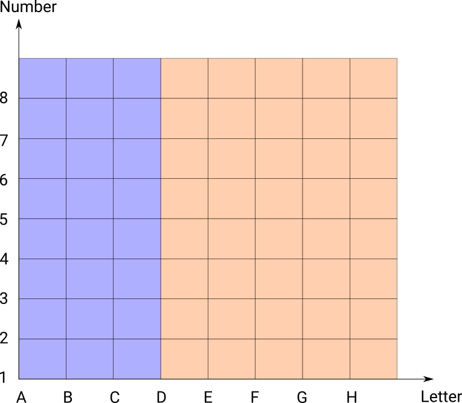
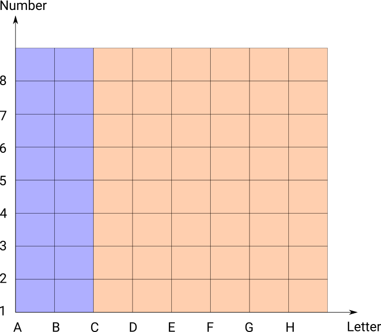

Representing Decision Trees on a grid
A decision tree is a series of conditional rules leading to an outcome. When stated as a chain of if-then-else rules it can be really hard to understand what is going on. If the number of dimensions and cutpoints is relatively small it can be useful to visualise on a grid to understand the tree.
Decision trees are often represented as a hierarchy of splits. Here’s an example of a classification tree on Titanic survivors.

This is useful but if there are a large number of splits, even on a few dimensions the trees can get quite large. The tree can also be linearised into a series of if else rules (so each following rule applies only to cases not already classified).
- Survived if sex not male
- Died if age > 9.5
- Died if sibsp > 2.5
- Else Survived
These can get quite confusing when they get quite large. Another way of looking at them is showing the cases on a grid, which is feasible as long as the number of dimensions split on is small (up to 4 or 5 depending on the number of cut points).

Specifying rules
Note that the rules as above can get quite hard to interpret because you have to keep in mind all the previous rules. For a simple example suppose we have these rules on a chessboard.
- Blue if letter < D
- Orange if letter >= C

The order matters here, switching them around gives a different result:
- Orange if letter >= C
- Blue if letter < D

First one can be written more precisely with the rules:
- Blue if letter < D
- Orange if letter >= D
in this form the order doesn’t matter.
Any tree can be specified in this way where the order doesn’t matter; in the Titanic example above:
- Survived if sex not male
- Died if male and age > 9.5
- Died if male and sibsp > 2.5
- Survived if male and age <= 9.5 and sibsp <= 2.5
This removes the amount of context you have to remember but can still be hard to understand from the description with lots of splits.
More complex rules
Consider this set of rules for colouring a chessboard:
- Blue if number >=7 and letter < C
- Blue if number < 2 and letter >= H
- Green if number < 3 and letter >= G
- Yellow if number < 7 and letter > F
- Pink if number >= 5 and letter >=C and letter < H
- Red if letter < C
- Grey if letter < E
- Grey if number < 4
- Else yellow
We could specify them with exact rules but the description would get very long; for example yellow is the rules:
- Yellow if letter >= F and number >= 3 and number < 7
- Yellow if letter >= H and number >= 7
- Yellow if letter >= F and letter < G and number < 2
- Yellow if letter >= E and letter < F and number >= 4 and number < 5
Similarly any tree description would be quite large. However this is very clear on a grid:

While this example might seem artificial, I’ve actually used this technique with great success on trees with 4 dimensions. With higher dimensions you have to make facets (like in the titanic example above), but if these groups don’t have too many cuts the visualisation is readable. You can also clearly see the boundaries between groups which can be informative in a classificaition (though with high dimensions you have to eyeball this across facets).
These diagrams are relatively simple to construct. First you need to extract all the cutpoints from the rules, and then create a grid of all cutpoints. Then you can evaluate the rules on each square of the grid to get the classification map. You could then augment this with extra information like the number of data points in each square, or the classification accuracy (like in the Titanic tree diagram above). A nice extension would be to combine information accross contiguous regions of the grid.